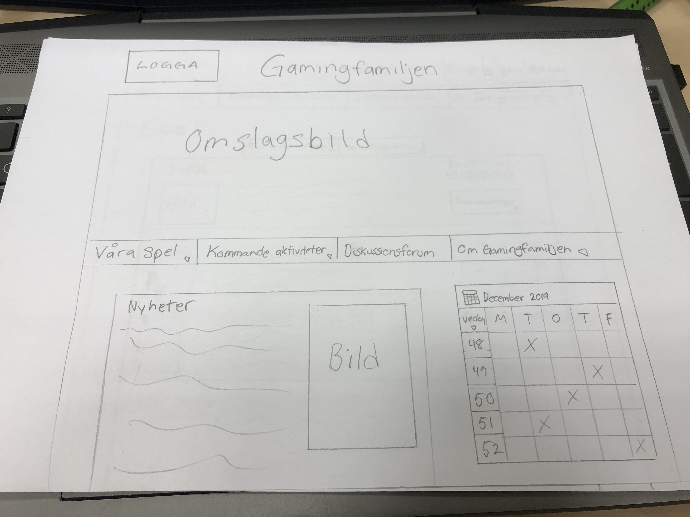
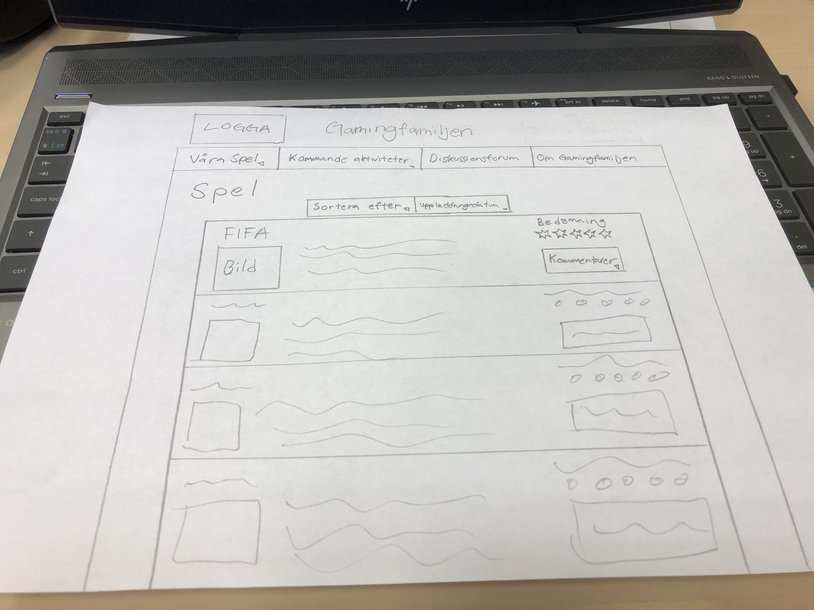

Jag kommer göra en desktop samt mobilannpassad sida av mitt projekt från ämnet gärnssnitssdesign. Det är en sida för organisationen Gamingfamiljen vars huvudsakliga målgrupp är barnfamiljer. Jag har fått feedback från mitt projekt som jag kommer tillämpa nu för att förbättra både förståelsen för hur man använder sidan samt att ha mer konsekvent i utseende.
2. Planering
Eftersom jag gör hemsidan som jag redan har gjort en digital prototyp av så kommer förarbetet att bli mindre den här gången. Både målgruppsundersökning, skisser och tester. Detta innebär att jag får mer tid till att skriva kod och lägga mer energi på att göra sidan ordentligt och så lik min digitala prototyp som möjligt.
2.1 Handskiss


2.2 Schema
Vecka
På lektionen
Utanför lektionen
4
Introduktion av projekt. Ladda ner från github.
Göra färdigt om dagens planering inte blev klart. Förbereda inför nästa lektion.